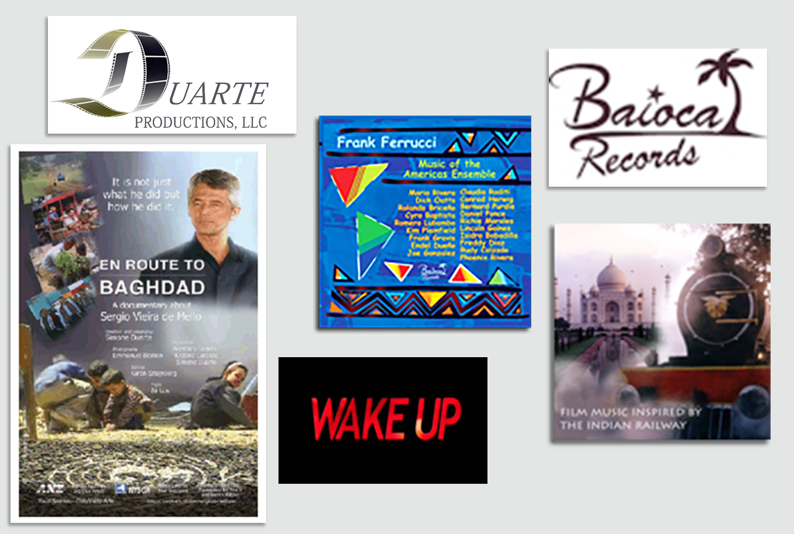

Motion Graphics, Animation, Visual Effects and Art Direction for television, film, interactive media and education.
My work combines storytelling, design, compositing, 3D animation and visual experimentation developed through professional practice, independent productions and university teaching.
We Remember... is a tribute created ten years after September 11th.
This project was promoted by Aniboom and later exhibited at the National September 11 Memorial Museum in New York.
Art Statement by Rita Ivanissevich:
It is hard to understand the passing of 10 years of life time for some and life stopped for others...
The day after 9/11, 2001 I was involved in volunteering and as disorientated as many, feeling useless in help and contribution. How could handing out water or words help a father looking for his first responder son? A still not born daughter will know about her working father? So I named this piece "we remember..."
And in the process of creating this graphic memorial, looking for the complete list of victims, trying to fairly include them all, working with their names and evoking them, they were somehow rescued from the past to remain vivid memories 10 years after.
Director, Sculptor and Animator
Inspired by M.C. Escher's lithographs, this art-animation explores loneliness, repetition and acceptance within a programmed universe.
Software: Motion Builder, Maya, Vicon IQ
A digital dance inspired by one of my sculptures exploring identity, transformation and self-acceptance.
Software: Motion Builder, Maya, Vicon IQ
Senior Motion Graphics Designer, Art Director and Creative Artist (1997–2004).
For seven years I designed opening titles, idents, broadcast graphics and promotional pieces under the fast-paced demands of live television production.
Main Software: Maya, After Effects, Photoshop and Premiere.
Virtual environments, interactive media, CD-ROM productions, web graphics, animation and visual storytelling.
3D models, virtual environments, textures and interactive graphics created for educational multimedia applications.
This project explored archaeological Egyptian themes and interactive storytelling through CD-ROM technology.

Motion graphics, logo development, branding, webpage design, title sequences, posters, CD-covers & disks labels and promotional work for clients including Duarte Productions and Frank Ferrucci.
Projects include Duarte Productions, En Route to Baghdad website, poster and postcard, opening sequence for the documentary Wake Up Frank Ferrucci Music, Baioca Logo, and CD-covers and disks and other independent creative collaborations.
PMS, A Shared Story was my master's thesis project and was selected for presentation at SIGGRAPH '96 Animator Sketches.
The animation combines humor and drama while exploring the emotional and physical experience of PMS through visual storytelling.
Created before modern compositing software became widely available, the project combined 3D computer- generated environments with live-action imagery.
Master's thesis project presented at SIGGRAPH '96 Animator Sketches.
Produced, written, directed and animated by Rita Ivanissevich.